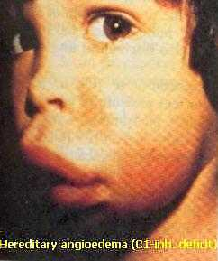

GENETIC DEFICIENCIES OF THE COMPLEMENT SYSTEM
Inherited deficiencies of complement proteins represent primary immunodeficiency states but, unlike the other forms described previously, do not involve primary defects in the lymphocytes. However, the various components of the complement system play a critical role in inflammatory and immunologic responses. Deficiency of specific complement components may predispose to certain diseases, much like the predisposition that occurs with selective deficiencies of the immune system, discussed earlier.

The end result of defects in complement, particularly CD3, is an increases susceptibility to bacterial infection and, with C2 C1q or C4 deficiency, a greater risk of immune complex and autoallergic connective tissue diseases, like SLE. The deficiencies of the later - acting components of the classic pathway( C5-8) result in recurrent neisserial (gonococcal, meningococcal) infections. Thus far, hereditary deficiencies have been described for almost all the classic components of the complement system and two of the inhibitors. Some of these deficiencies occur relatively often: for example, the C2 deficiency occurs relatively often: for example, the C2 deficiencies state occurs with a frequency of about 1% in the general population. The absence of C1-esterase inhibitor allows uncontrolled activation of this enzyme with the generation of vasoactive C2-kinine. This manifests in hereditary form of angioedema, affecting skin and mucous membranes.Primary immune deficiency can be observed in many other inborn disorders: Down’s syndrome, corpus callosum agenesia, albinism, myotonic dystrophy, familiar syndrome of antibody hypercatabolism, Albers-Schoenberg (osteopetrosis) syndrome, Shwachman’s syndrome (exocrine pancreas hypoplasia, anemia, leukopenia , IgA/IgM deficiency), Kostmann’s syndrome (familial autosomic recessive agranulocytosis) etc.
NEXT CHAPTER
OR